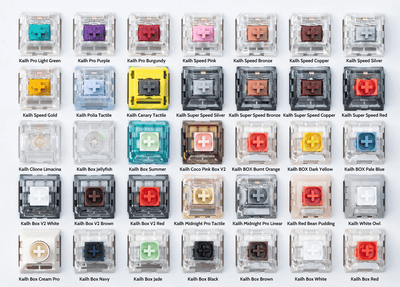

Building Keyboards
Parts Of a Keyboard
There are about 6 pieces of information if you are trying to build a computer.
The keyboard case, case is your outer shell or how your keyboard base will look, feel free to choose
a favoite color or material (wood,glass,plastic, etc.).
your PCB is where your switches are mounted and connected (where the electrical components that allow your keys to be pressed).
The plate locks your keys in place.
the stabilizers stabilize/prevent wobbling in your bigger keys such as space, enter, shift or tab.
your switches are the heart of the typing experience and can make a difference in your preference.
your keycaps are how your keys (a-z and numbers) will look, they dont necessarily have anything to do with how your keys feel besides texture.
keyboard switches
Picking switches can be difficult, they come in different colors and feels. However they are categorized into three main feels. Linear switches are known to be more smooth and easier to press down on. Tactile is a mix of linear and clicky, where you can feel a bump when you press your keys. People who like to know if they are pressing/registering the key they pressed are more likely to like these switches. Clicky switches are loud and have a heavy feel. They’re good for people who like hearing keyboard sounds.
Table of switches
Many switches are associated with colors, here are the more famous/univernal colors.
| color | type | sound |
|---|---|---|
| red | Linear | quiet |
| black | linear | quiet |
| blue | clicky | loud/clicky |
| brown | tactile | quiet/slight bump |
| clear | tactile | quiet/slight bump |